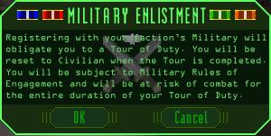
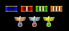
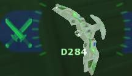
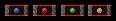

Military ServiceEnlisting in a factional military offers a new set of lucrative missions, military-only medals, and the glory of representing your faction directly in combat. However, enlistment should not be performed on a whim. During your tour of duty, you are likely to be engaged in missions that will put you at serious risk of combat with opposing military pilots, especially if your factions presently have a negative relationship with each other. |
| Enlistment |
|
To join your faction's military, you must be a registered Civilian pilot (Rank 9+) in good standing, and with a home faction political rating of at least 50. The interface to register as military is available through the registry setting controls at faction stations. You may only join your own faction's military organization.  A term of enlistment is referred to as a "Tour of Duty". A Tour is ten (10) missions in length. Civilian missions completed do not count toward this service. You may not voluntarily exit military service until your present Tour is completed. Note that in times of a Hostile factional relationship, military pilots are prohibited from docking at Hostile stations. |
| Medals and Privileges |
|
Military pilots receive mission ribbons for each mission and Tour of Duty completed during military service. Additionally, a series of Ace medals is awarded for legitimate kills of opposing military targets during times of Hostility.  There are no factional insurance fees charged to military pilots. Military pilots default to full equipment coverage (without cargo coverage) while enlisted. In the course of a Procurement mission, equipment requested by the mission is covered specifically. Military pilots have the option of tuning beacons under the control of opposing factions. The military version of the Patrol mission directly encourages this activity against Hostile factions, as well as encouraging maintenance of home faction beacons. Beacons are crucial to the operation of military intelligence tools available to Optimus pilots, and to long-range factional communications. |
| Mechanics |
|
When you have set your registry to Military, you are subject to rules of engagement based upon your faction's stances toward the others. Firing upon Civilians or Rookie pilots in regulated space is punished harshly. Engaging other Military pilots is encouraged if your factions are Hostile, but discouraged in regulated space to progressively greater degrees if your factions are Neutral or Friendly with each other. There is never a penalty for engaging and eliminating Pirate scum. Pilots of other factions who are intruding by conducting opposing military missions against your own faction, or who are aggressively tuning beacons in your faction's controlled space, become legitimate targets regardless of present factional relationships. You may typically identify these interlopers by their military flight registry, and by their behavior, such as conducting espionage near friendly buildings or raiding ore depots. Monitor their behavior with care, and be certain of your target, or you may be penalized for an illegitimate kill.  Ships flying under military flight registry are marked in your HUD with a traditional "crossed-swords" icon in the color of the faction to whose military they belong. |
| Demerits |
|
Violations of the rules of engagement will generally result in a demerit being placed on your record. Illegitimate kills and damage to non-Hostile faction assets are the typical reasons for assignment of a demerit. When a demerit is issued, your home faction political rating will also suffer. Egregious violations of the RoE, such as downing a Civilian without cause, will usually result in additional credit fines and further penalties beyond a simple demerit on record. Presence of a demerit will reduce your pay for missions, as well as slow your rise in rank. Even civilian authorities will take note of demerits on a pilot's record and reduce rewards for Civilian tasks. Demerits will linger on your record even after your present Tour of Duty is concluded.  Demerits may only be removed by drastic improvement of home faction political rating. |